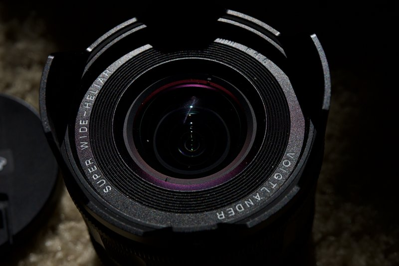

Voigtlander 15mm f4.5 Super-Wide Heliar for Nikon Z
- this was my first voigtlander lens
- but most of these are the voigtlander 15mm
- I love it and I love that the aperture blades create sun stars
- that was a surprise for me and I look forward to using that feature
- I like it when modern products retain retro vintage style
- this folder has some randos in it right now
